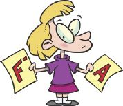

Learning is about immersing yourself in the mystery of new information so you can explore it, discover it, understand it, apply it, and create new information for others and knowledge for yourself. That’s what makes learning such an exciting and fun adventure.
To be a successful learner, you must have some basic training on how to learn. You know you’re on the right path when you’re actively observing and discovering, asking and answering questions, thinking, understanding and retaining what you’re learning, applying what you’ve learned, and, most importantly, feeling engaged and interested.
Every year, millions of students transition from high school to college. Often, these students find themselves overwhelmed by the amount of information they have to assimilate in college and stymied by the lack of guidance, something they were accustomed to receiving in high school.
The statistics are downright troubling.
These findings demonstrate the urgent need for more effective learning where students are engaged, motivated, and empowered to learn. Will you be ready for college when the semester comes at you like a freight train?
Let’s face it: schools tell you what to learn but not how to learn. Although the amount of information you’re expected to learn has dramatically increased, you’re left on your own to figure out how to learn, mostly through trial-and-error studying. Studying, however, is not the same as learning. Simply rereading the same material over and over again is not the answer. I wrote this book so students like you can learn how to learn.
Today, students are arriving at colleges unable to think through problems, learn fundamental subjects, and do well on basic exams. It’s not that college subjects cannot be learned; it’s that students have never been taught how to learn. This is the missing step in our schools.
Concise Learning will teach you to master the art of learning. That’s right; learning is an art that you can master. Understand this: learning is more a function of process than aptitude. It’s more about how you learn than how smart you are. This means that it’s up to you, not your genes, to determine how well you learn and the grades you get.